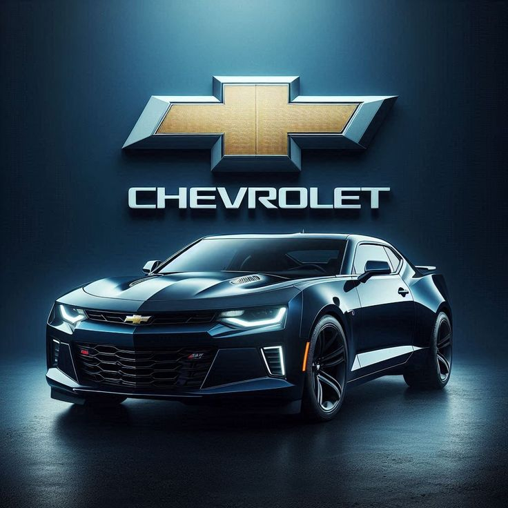
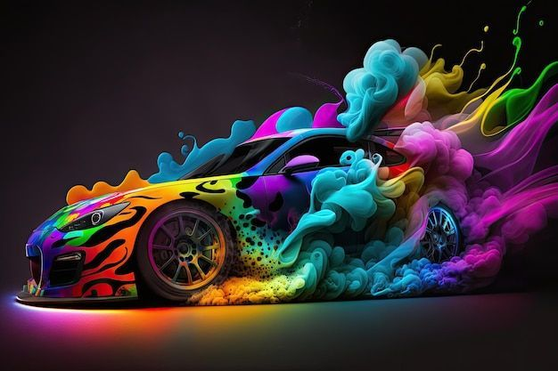

Programación
Fundamentos- Python
- HTML5
- CSS
- JavaScript básico
- MySQL básico
Formación · técnica · disciplina
Mi camino se ha desarrollado en dos áreas que, aunque distintas, comparten la misma esencia: diagnóstico, precisión, lógica y resolución de problemas. La mecánica me enseñó a entender cómo funcionan las cosas, y la programación me desafía a convertir ideas en soluciones digitales.
La programación es la evolución de mi forma de pensar: analítica, ordenada y enfocada en la solución.

